Galerie Foto
Apasă pe imagini pentru a le vedea în detaliu


Conexiune de mare viteză în toate spațiile.
Acces complet pentru a-ți pregăti mesele preferate.
Siguranță pentru mașina ta, fără costuri extra.
Grătar în aer liber și spațiu de relaxare.
Terasa cu vedere spre munte si spatii amenajate.
Avem camere separate fiecare cu bai proprii dotate corespunzator.
Camera special amenajata pentru a lua masa, utilata si echipata corespunzator.
Pensiunea noastră este punctul de plecare ideal pentru a vizita cele mai frumoase locuri din zonă.
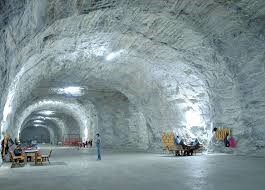
Aflată la doar 700 de metri distanță, este una dintre cele mai mari și moderne saline din țară, renumită pentru tratament și relaxare.
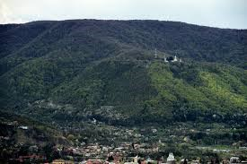
Perfect pentru drumeții ușoare, oferind o panoramă superbă asupra orașului și aer curat de munte.
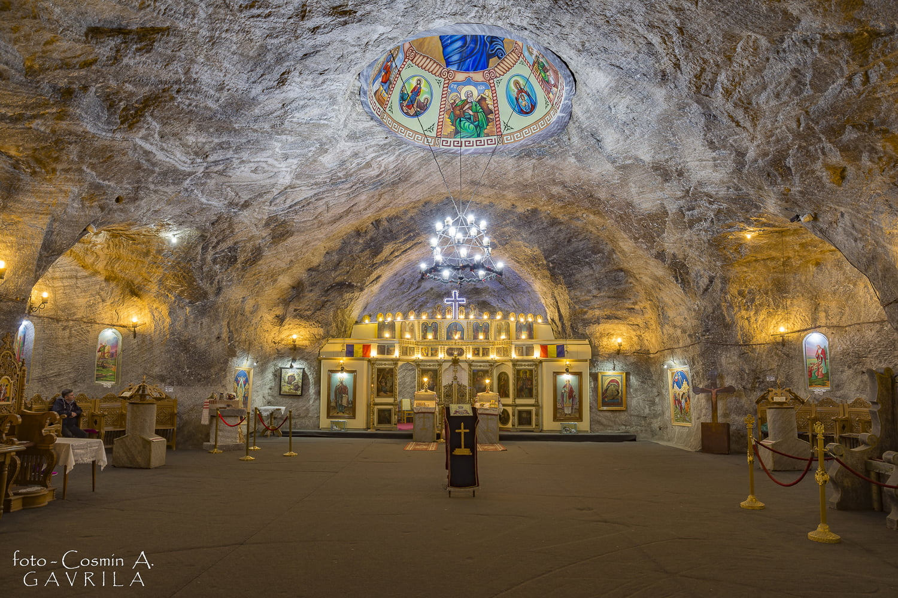
O biserică unică în Europa, situată chiar în interiorul salinei, construită în totalitate din sare.
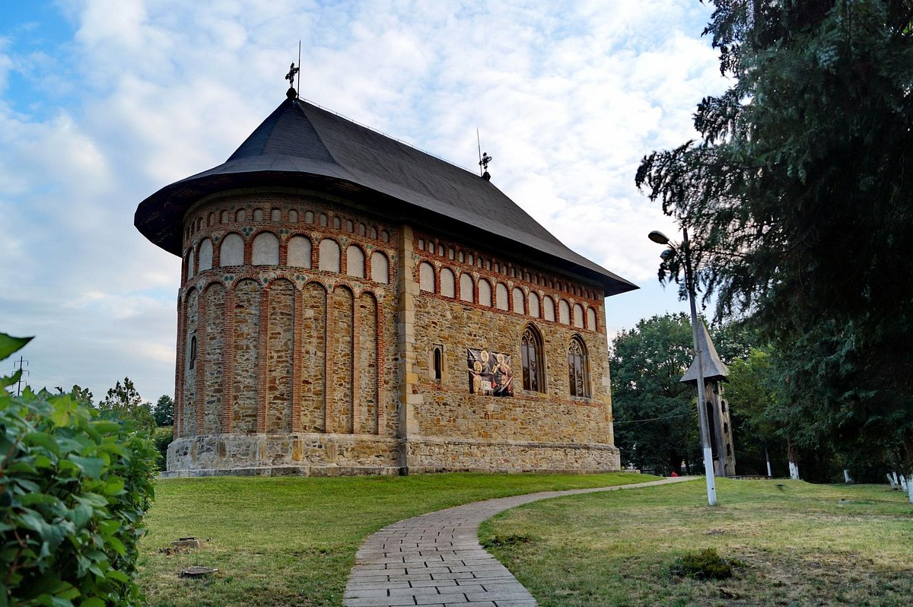
Biserica din Borzești este un monument istoric de o importanță simbolică uriașă, fiind ctitorită de Ștefan cel Mare între anii 1493 și 1494.Se afla la aproximativ 14 km
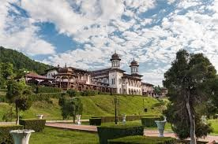
Slănic Moldova, supranumită "Perla Moldovei", este una dintre cele mai renumite stațiuni balneoclimaterice din România, situată la aproximativ 18 km de Târgu Ocna. Slănic Moldova este faimoasă pentru izvoarele sale de ape minerale premiate internațional, aerul de munte extrem de pur și traseul turistic „300 de scări”. Este destinația perfectă pentru o plimbare relaxantă în parcul central sau pentru o cură de sănătate în natură.
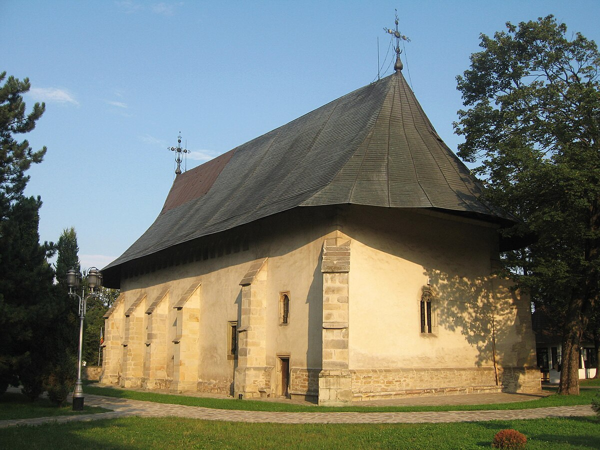
Mănăstirea Bogdana Construită în secolul al XVII-lea (anul 1660), această mănăstire-cetate impresionează prin zidurile sale masive de apărare și liniștea deplină. Este un loc încărcat de rugăciune, renumit pentru icoana făcătoare de minuni a Maicii Domnului și pentru arhitectura sa ce îmbină elementele moldovenești cu cele muntenești. Se afla la aproximativ 20 km de Targu Ocna.
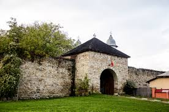
Mănăstirea Răducanu din Târgu Ocna este un monument istoric de secol XVII, reprezentativ pentru barocul târziu moldovenesc și unic în România prin pisania sa cu text în limba franceză. Ansamblul adăpostește mormântul scriitorului și omului politic Costache Negri, fiind înconjurat de ziduri de incintă fortificate cu o înălțime de peste 5 metri.
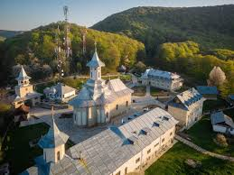
Mănăstirea Măgura Ocnei, situată pe muntele cu același nume, este un important centru spiritual reconstruit după 1990 pe locul vechiului schit din 1653 care fusese dărâmat de regimul comunist. Lăcașul de maici cu hramul „Înălțarea Domnului” străjuiește Valea Trotușului și este legat de memoria soldaților din Primul Război Mondial , fiind situat lângă Monumentul Eroilor de pe Măgura.
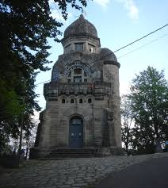
Monumentul Eroilor de pe Măgura Ocnei este un ansamblu-muzeu unic în țară, construit din piatră cioplită între 1925-1928, pentru a onora memoria celor 14.000 de ostași români căzuți pe frontul Oituz-Coșna-Cireșoaia. Situat la o altitudine de 520 de metri, edificiul are o înălțime de 22 de metri și adăpostește o colecție impresionantă de armament, uniforme și fotografii originale din Primul Război Mondial.
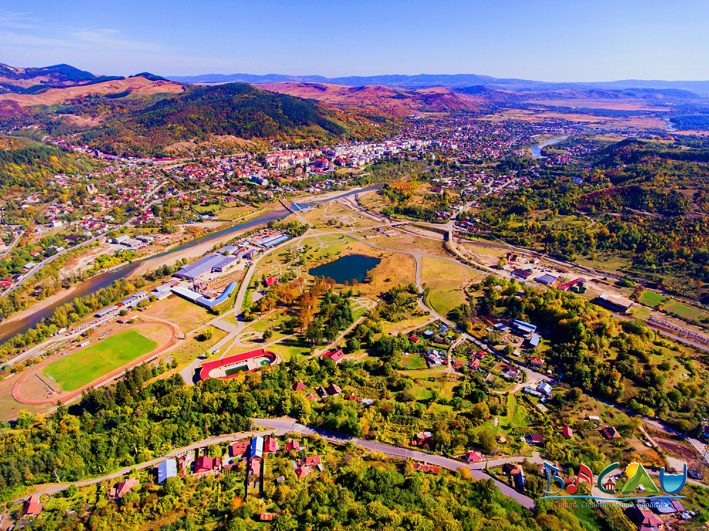
Parcul Măgura este inima balneară a orașului Târgu Ocna, fiind o oază de verdeață situată chiar la poalele dealului cu același nume, renumită pentru cele șapte izvoare minerale (sulfuroase, clorurate, sodice) folosite în tratarea afecțiunilor digestive și respiratorii. În incinta parcului vei găsi un centru modern de tratament balnear, două piscine în aer liber (una pentru adulți și una pentru copii) deschise în sezonul estival, locuri de joacă și alei liniștite, fiind totodată punctul principal de plecare pentru traseele montane către Monumentul Eroilor.
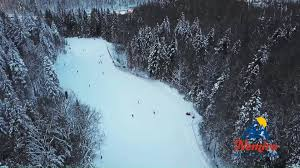
Pârtia Nemira din Slănic Moldova este o pârtie cu dificultate medie, dotată cu instalație de telescaun, tunuri de zăpadă și nocturnă, oferind condiții optime pentru sporturile de iarnă. Situată la baza Munților Nemira, aceasta are o lungime de 1.414 metri și oferă o panoramă spectaculoasă asupra stațiunii, fiind una dintre principalele atracții turistice din județul Bacău.
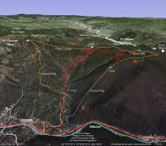
Cel mai frumos și popular traseu montan care pornește direct din Târgu Ocna este cel care urcă pe Muntele Măgura. Acesta îmbină perfect efortul fizic cu istoria și peisajele spectaculoase Traseul: Târgu Ocna – Monumentul Eroilor – Mănăstirea Măgura Ocnei – Vârful Cireșoaia Este un traseu accesibil, dar cu o diferență de nivel care îți va pune sângele în mișcare. Dificultate: Ușoară spre medie (în funcție de condiția fizică). Durată: Aproximativ 2 - 2,5 ore până la mănăstire (doar dus). Diferență de nivel: Aproximativ 500 metri. Marcaj: Bandă albastră / Triunghi roșu (în funcție de varianta aleasă).
Apasă pe imagini pentru a le vedea în detaliu